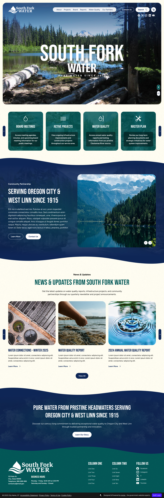
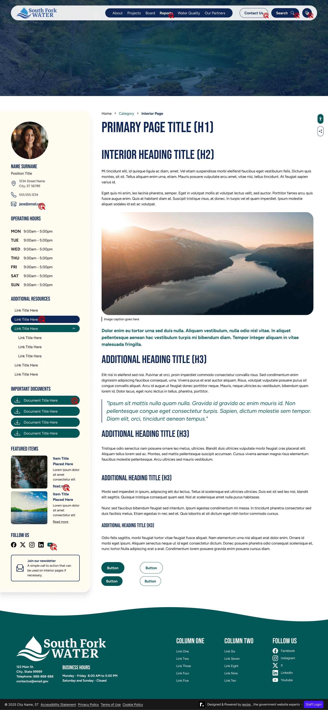
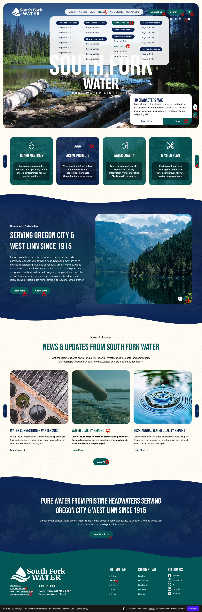

Case Study 03
South Fork
Water Board
Website redesign for a wholesale water authority serving Oregon City and West Linn — designed around their "simplicity is brilliant" philosophy and the natural heritage of the Clackamas River headwaters. Pure water since 1915.
Overview
A water utility that isn't about water treatment
South Fork Water Board has supplied pure water to partner cities Oregon City and West Linn since 1915. They're a wholesale authority — they don't serve individual residents directly — which shapes everything about how the site needed to communicate. Their audience is informed, their organization is small, and their philosophy is clear: "simplicity is brilliant."
The brief was to design a site that felt like their water source — the pristine headwaters of the Clackamas River — not like a mechanical treatment facility. Nature over infrastructure. Clarity over complexity. Heritage over modernity for its own sake.
Challenge
Designing within an existing brand
South Fork had established brand guidelines — logo, colors, and visual identity — before the web project began. Unlike projects where the designer builds from scratch, this one required working faithfully within an existing system while still creating something visually distinctive and web-appropriate.
The brand's forest green and light blue palette was already defined. The task was implementing it in a way that felt purposeful on the web — not just technically compliant, but genuinely expressive of what the organization is about.
Process
Brand guidelines first, layout second
Design Decisions
Nature over mechanics
Every visual choice reinforced the same idea: South Fork's value is their water source, not their infrastructure. Imagery, language, and color all pointed toward the Clackamas River rather than pipes and pumps.
Design Screens / Revision 1 / Desktop 1440px



Outcome
Simplicity delivered
The finished design reflects exactly what South Fork asked for — a site that feels like their water source, not their equipment. Clean structure, natural imagery, established heritage, and a content management setup that a small wholesale board can actually maintain. Simplicity, as requested, is brilliant.